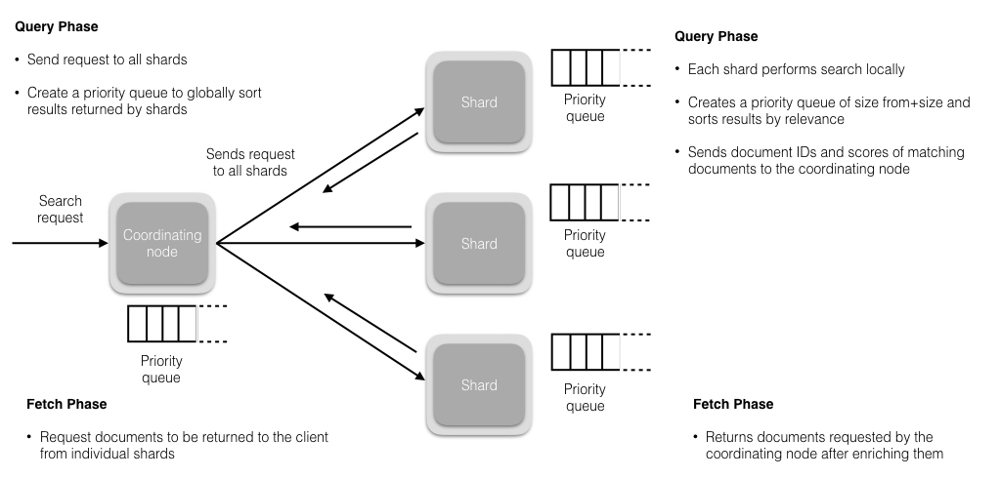

Ch04-Elasticsearch 之 Search
August 15, 2021
Elasticsearch 的 Search 操作包含两个阶段，一个是 QueryPhase，另一个是 FetchPhase。QueryPhase 在初始查询阶段，查询会广播到索引中每一个分片副本 (主分片或副分片)。每个分片在本地执行搜索并构建一个匹配文档的优先队列（优先队列是一个存有 topN 匹配文档的有序列表，即 doc id。优先队列大小为分页参数 from + size），注意该队列中并没有取具体的数据。FetchPhase 会根据获取到的 doc id 向对应的节点依次发送 GET 请求，获取结果，然后合并，聚合，排序最终返回结果。
1. Search 流程 #
Elasticsearch 目前有两种搜索类型 DFS_QUERY_THEN_FETCH 和 QUERY_THEN_FETCH。两种不同的搜索类型的区别在于查询阶段，DFS 查询阶段的流程要多一些，它使用全局信息来获取更准确的评分。

1.1 查询阶段 (Query Phase) #
在此阶段，协调节点将搜索请求路由到索引 (index) 中的所有分片 (shards)（包括：主要或副本）。分片独立执行搜索，并根据相关性分数创建一个优先级排序结果。所有分片将匹配的文档和相关分数的文档 ID 返回给协调节点。协调节点创建一个新的优先级队列，并对全局结果进行排序。可以有很多文档匹配结果，但默认情况下，每个分片将前 10 个结果发送到协调节点，协调创建优先级队列，从所有分片中分选结果并返回前 10 个匹配。
注意：
这里只是返回了匹配文档的 ID 和 score，没有返回完整的 doc
1.2 获取阶段 (Fetch Phase) #
在协调节点对所有结果进行排序，已生成全局排序的文档列表后，它将从所有分片请求原始文档。所有的分片都会丰富文档并将其返回到协调节点。
注意：
这里会重新请求原始 doc，并返回完整的 doc
2. 概念介绍 #
搜索相关性 (Search Relevance)
相关性由 Elasticsearch 给予搜索结果中返回的每个文档的分数确定。用于评分的默认算法为 tf/idf（术语频率/逆文档频率）。该术语频率测量术语出现在文档中的次数（更高频率=更高的相关性），逆文档频率测量术语在整个索引中出现的频率占索引中文档总数的百分比（更高的频率=较少的相关性）。最终得分是 tf/idf 分数与其他因素（如词语邻近度（短语查询）），术语相似度（用于模糊查询）等的组合。